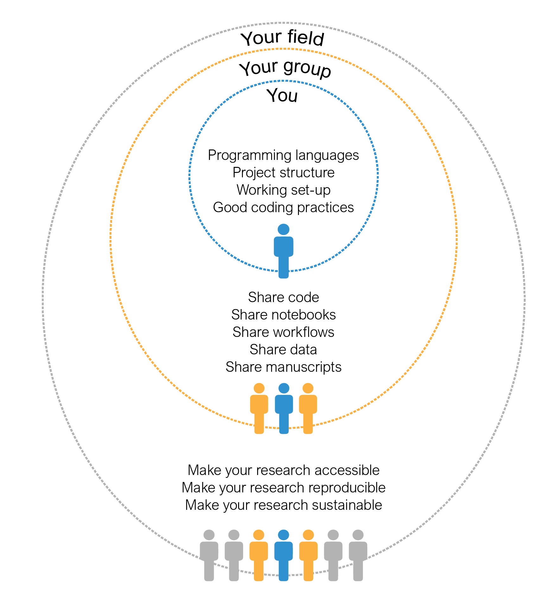
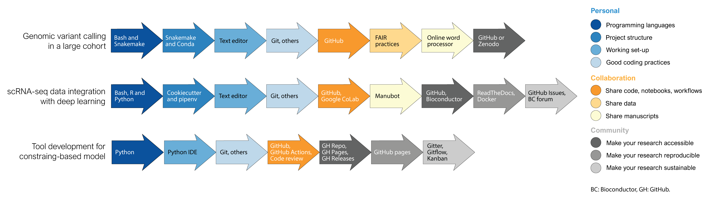

Daniela C. Soto * 0000-0002-6292-655X
· dcsoto
· dcsoto_cl
Genome Center, MIND Institute, and Department of Biochemistry & Molecular Medicine, Davis, CA 95616,USA
As biotechnological and biomedical research are increasingly fed by the insights arising from computation, the conversation about good practices in computational biology becomes more and more prominent. An increasing body of literature has addressed practices for shareable, reproducible, and sustainable computational research, from high-level principles for data and software stewardship to deep-dives into version control or software automation. However, the actual implementation of good practices remains unaddressed. The latter relies on incorporating the right tools into our daily routines, considering the type, scope and stage of the research project. Here we provide a compendium of relevant tools for computational biology research, emphasizing their time and place within a continuum that traverses personal practices, the collaborative practices of a team, and the practices required to interact with a community at large. This compendium will serve as a starting point and as a consulting guide to help navigate the ongoing influx of tools and how to best incorporate them into a computational biologist’s working routine, enabling reproducible biomedical and biotechnological research in the long term.
Introduction
Since Margaret Dayhoff pioneered the field of bioinformatics back in the sixties, the application of computational tools in the field of biology has vastly grown in scope and impact. Nowadays, biotechnological and biomedical research are routinely fed by the insights arising from novel computational approaches, machine learning algorithms and mathematical models. The ever increasing amount of biological data and the exponential growth in computing power will amplify this trend in the years to come.
The use of computing to address biological questions encompasses a wide array of applications usually grouped under the terms of “computational biology” and “bioinformatics”. Although distinct definitions have been delineated for each one [1,2], here we will consider both under the umbrella term “computational biology”, alluding to any application that involves the intersection of computing and biological data. As such, a computational biologist can be a data analyst, a data engineer, a statistician, a mathematical modeler, a software developer, and many others. In praxis, the modern computational biologist will be a “scientist of many hats”, taking on several of the duties listed above. But first and foremost, we will consider a computational biologist as a scientist whose ultimate goal is answering a biological question or addressing a need in the life sciences by means of computation.
Scientific computing requires following specific practices to enable shareable, reproducible and sustainable outputs. Computing-heavy disciplines, such as software engineering and data science, have adopted practices addressing the need for collaboration, visualization, project management, and strengthening of online communities. However, as a highly interdisciplinary and evolving field, computational biology has yet to acquire a set of universal “best practices”. Since most computational biologists come from diverse backgrounds and rely on self-study rather than formal education [3], the absence of guidelines may leave many computational biologists astray, engaging in unsustainable practices that hinder reproducibility and collaboration, slowing down biomedical and biotechnological research.
In recent years, this “guidelines gap” has been addressed by the definition of FAIR principles—Findability, Accessibility, Interoperability, and Reusability—coined in 2016 [4]. Originally developed for data stewardship, FAIR principles have been proposed as universal guidelines for all research objects [5]. However, how to translate these high-level principles into day-to-day practices requires additional nuances, based on the type of research object, the size and scope of the project, and the experience of the researcher.
Over the last decade, several researchers have published advice on good practices for scientific computing and computational biology. Recently, the framework ADVerTS (availability of software, documenting software, version control, testing, and support) has been proposed as a set of “barely sufficient” practices to address the need for FAIR scientific software [5]. Other advice includes reviews introducing bench scientists new to computational biology to a wide range of topics ranging from programming to project organization [6,7,8,9,10], deep-dives into the use and applications of one powerful tool, such as the software development and version control cloud service GitHub [11] and the web-application Jupyter Notebooks [12], or comprehensive reviews covering one specific need in computational biology, such as workflow automation [13] or software library development [14].
Although this advice proves immensely helpful, some aspects of the computational biology “journey” remain uncovered. Indeed, guiding principles and general advice are key to establish a behavior roadmap, but their actual implementation is enabled by incorporating the right tools into our daily working routine. Tool selection has many components, from availability to suitability to personal preference, and although the latter is left to the reader, here we will shed light over the first two. We premise that good practices in computational biology lie within a continuum that traverses three “levels”: the individual’s personal practices, the collaborative practices of a team, and the practices that allow a broader scientific community to access and engage over time with the research (Figure 1). Each one of these levels has a different set of needs and challenges, as well as a specific set of tools that can be used to address them. Here, we compiled a curated list of these tools, emphasizing their time and place in a computational biology research project. Committed to practicality, we illustrated the utility of these tools in case studies covering a wide spectrum of research topics that computational biologists can use to model their own practices, modifying them to suit their own needs and preferences.
Figure 1: The three “levels” of computational biology include your personal research, your group and collaborators, and your scientific field.
Level 1: Personal Research
The computational biology “journey” begins with you—specifically, with the set of skills, tools and practices that you have in place to conduct your personal research. Taking the time to optimally establish these building blocks will have high payoffs later, when you find yourself in need to go back to your previous analyses. Consider that your most important collaborator is your future self, either of tomorrow or a couple of years from now. To consider all the aspects that comprise a solid ground for any personal project, we devised a framework involving four main sequential steps (Table 1).
Table 1: Steps to conduct most computational biology projects.
• Version control system:Git[50] • Code repositories:GitHub[51], GitLab[52], Bitbucket[53] • Git GUIs:GitHub Desktop[54], GitKraken[55]
Step 1: Choose your programming languages
Different programming languages serve distinctive purposes and have different idiosyncrasies. As such, choosing the right programming language for a project depends on your research goals and personal preference or skill set. Additionally, communities usually favor the usage and training of some programming languages over others; utilizing such languages may facilitate integrating your work within the existing ecosystem.
As computational biology becomes a data intensive discipline, interacting with high-performance computing (HPC) has become a hallmark of the field. HPC infrastructures commonly use Unix/Linux distributions as their operating system. To interact with these platforms, you need to use a the command line interpreter known as the “Unix shell”. There are multiple versions of Unix shells, Bash being one of the most widely adopted. Besides providing a user interface, the shell is also a scripting language that allows manipulating files and executing programs through Shell scripts. Unix/Linux operating systems have other interesting perks, such as powerful and fast commands for searching and manipulating files (e.g. sed, grep or join) as well as the language awk, that can perform quick text processing and arithmetic operations.
One of the most common tasks of any computational biologist is data analysis, which usually involves data cleaning, exploration, manipulation, and visualization. Currently, the most widely used programming language for data analysis worldwide is Python [56,57]. Computational biology research has followed this trend making Python one of the most popular languages among researchers, tendency that will likely keep growing as machine learning and deep learning are more widely adopted in biological research. Python usage has been facilitated by the availability of packages for biological data analysis accessible through package managers such as Pip or Conda. Likewise, R is another prominent language in the field. Arguably, one of R main strengths is its wide array of tools for statistical analysis. Of particular interest is the Bioconductor repository, where many gold-standard tools for biological data analysis have been published. R usage in data science has deeply benefited from the Tidyverse packages and surrounding community, increasing the readability of the R syntax for both data manipulation via dplyr, and visualization via ggplot2.
Oftentimes, computational biologists require coding their own sets of instructions for processing data via scripts or programs. A script can be described as lightweight single-file program developed to tackle a narrow purpose. They are likely written in an interpreted programming language instead of a compiled one. Interpreted programming languages execute the program directly, without previous compilation, meaning each statement is run individually. They are quick to edit and can be run interactively, at the expense of computational performance. In computational biology, the current most common multi-purpose scripting languages are Python and R. When working in a HPC environment, Shell/Bash scripting is also widely used. Perl and Matlab are also popular languages among bioinformaticiancs and systems biologists, respectively. A program, on the other hand, is a larger tool that usually combines multiple scripts and works as a “black box” to the user. It is designed to tackle computationally intensive problems; thus, a compiled language is preferred. Several tools designed for high-weight biological data processing have been written in C/C++. In recent years, however, scientists have been turning to Rust because of its speed, safety and active community [58]. If computational performance is less of a concern, Python and R are suitable alternatives as coding programs.
Biological data processing is rarely a one-step process. To go from raw data to useful insights, several steps need to be taken in a specific order, accompanied by a plethora of decisions regarding parameters. Computational biologists have addressed this need by embracing workflow management systems to automate data analysis pipelines. A pipeline can be written as a Shell script where a handful of commands are written one after another, using Shell variables and Shell scripting syntax when needed. Although effective, this approach provides little control over the workflow, and lacks features to run isolated parts of the pipeline or track changes in input and output files. To overcome these limitations, a Bash script can be “upgraded” using the GNU Make program, which was originally designed to automate compilation and installation of software, but that is flexible enough for building other types of workflows also. Nowadays, however, several dedicated bioinformatics workflow managers have been developed. Snakemake is a workflow management system written in Python, allowing to incorporate the syntax of the tool with standard Python code. Similarly, Nextflow was developed as a domain specific language (DSL) for workflow defnition based on Groovy—a programming language for the Java virtual machine. These tools not only provide control over every single step of the pipeline, but also offer features like interacting with job schedulers, software environment managers, and cloud computing support. Alternatively, there are available declarative standards to define workflows in a portable and human-readable manner, such as the Common Workflow Language (CWL) and Workflow Description Language (WDL, pronounced “widdle”). Although these are not executable, they can be run in CWL- or DWL-enabled engines.
Step 2: Define your project structure
After choosing your programming languages and before starting any coding, we advise you to come up with a well-thought-out project structure. This design should be intentional and tailored to the present and future needs of your project—remember to be kind to your future self. A computational biology project requires, at the very least, a folder structure that supports code, data, and documentation. Although tempting, cramming all kind of files in a unique folder is unsustainable. Instead, separate each one on different folders and subfolders, if needed. To simplify this process, you can base your project structure on research templates available off-the-rack. For data science projects, the Python package Cookiecutter Data Science cuts down the effort to the very minimum [26]. Running the package prompts a questionnaire in the terminal where you can input the project name, authors, and other basic information. Then, the program generates a folder structure to store data—raw and processed—separated from notebooks and source code, as well as pre-made files for documentation such as a “README”, a docs folder, and a license. Similarly, the Reproducible Research Project Initialization (rr-init) offers a template folder structure that can be cloned from a GitHub repository and modified by the user [27]. Although the latter is slightly simpler, both follow an akin philosophy aimed at research correctness and reproducibility [59]. For workflow automation projects, we advice a similar folder structure. Snakemake recommends to store each workflow in a dedicated folder separated into workflow-related files—the Snakefile, rules and scripts—results, and configuration [28]. In all cases, the folder must be initialize as a git repo for version control (See Step 4).
The software and dependencies needed to execute a workflow or program are also part of the project structure itself. The intricacies of software installation and dependency management are not to be underestimated. Fortunately, package and virtual environment managers significantly reduce this burden. A package manager is a system that automates the installation, upgrading, configuration, and removing of community-developed programs; a virtual environment manager, on the other hand, is a tool that generates isolated “environments” containing programs and dependencies that are functionally independent from other environments or the default operating system. Once a virtual environment is activated, a package manager can be used to install third-party programs.
We believe that every computational biology project must start with its own virtual environment to boost reproducibility: environments save the project’s dependencies and can restore them at will so the code can be run in any other computer. There are multiple options for both package and virtual environment management—some language-specific and some language-agnostic. If you are working with Python, you can initialize a Python environment using virtualenv or pipenv (where different Python versions can be installed). Inside the environment, you can use the Python package manager pip to import Python code from the Python Package Index (PyPI) repository, GitHub, or locally. For the R language, R-specific environments can be created using renv, where packages can be installed via install.packages function from the Comprehensive R Archive Network (CRAN) and CRAN-like repositories. R also has BiocManager to install packages from the Bioconductor repository, which contains relevant software for high-throughput genomic sequencing analysis. Additionally, RStudio developed the RStudio Package Manager which works with third-party code available in CRAN, Bioconductor, GitHub, or locally. A language-agnostic alternative is Conda—an increasingly popular package and a virtual environment manager. It supports program installation from the Anaconda repository, which contains the channel Bioconda specifically tailored to bioinformatics software. If Python is installed, Python dependencies can be installed via pip in a Conda environment as well. Conda is particularly helpful when working with third-party code in all sorts of languages—a common predicament in computational biology. Conda package and environment manager is included in both the Anaconda and Miniconda distributions. The latter is a minimal version of Anaconda, containing only Conda, Python, and a few useful packages.
Step 3: Choose your working set-up
With the foundation in place, the next step is to start coding. However, a more practical question needs to be answered first: Where to code? The simplest tools available for this purpose are text editors. Since writing code is ultimately writing text, any tool where characters can be typed fulfills this purpose. However, coding can be streamlined by additional features as those found in code editors—text editors especially developed for writing code. Crucial features to facilitate coding include syntax highlight, indentation, and autocompletion. Commonly used desktop editors include Atom, Sublime, Visual Studio Code, and Notepad++ (Windows only), all which offer a myriad of plugins to enhance the coding experience. Command line text editors are also suitable options for coding, with Vim and Emacs being the most powerful ones. All of these tools share the advantage of being language agnostic, which is especially handy for the polyglot computational biologist.
In addition to text editors, integrated development environments (IDEs) are also popular options for coding. At its essence, IDEs are supercharged text editors, i.e. with multiple other features that make writing code easier. The main parts of an IDE are a code editor (with syntax highlight, indentation and suggestions), a debugger, a folder structure, and a way to execute your code (a compiler or interpreter). Most IDEs are not language agnostic, meaning that they only allow to code in one language. The array of features also comes at a cost—IDEs usually use more memory and imply more visual clutter, if that is a concern of yours. For Python, Jupyter Lab, Spyder, and PyCharm are popular options, while for R, RStudio is the gold-standard. Notably, the differences between an IDE and a code editor are somewhat blurry, especially when enough plugins have been added to a code editor.
In the latest years, notebooks have acquired relevance in computational biology research. A notebook is an interactive application that combines live code (read-print-eval loop or REPL), narrative, equations and visualizations. Common notebooks use an interpreted languages such as Python or R, and narrative usually uses Markdown—a lightweight markup language. Data analysis greatly benefits from using notebooks instead of plain text editors or even IDEs: the combination of visuals and texts allows researcher to tell compelling stories about their data, and the interactivity of its code enables quick testing of different strategies. Jupyter notebook is a popular web-based interactive notebook developed originally for Python coding, but that also accepts R and other programming languages upon installation of their kernels—the computing engine that executes the notebook’s live code “under the hood”. Jupyter notebook can also be executed in the cloud using platforms such as Google CoLab and Amazon WebServices, taking advantage of the current trend of cloud computing. RStudio also allows the generation of R-based notebooks known as R Markdown, which is especially well-suited for generating data analysis reports.
Step 4: Follow good coding practices
After dealing with steps one through three, finally comes writing code. Coding, however, requires good practices to ensure correctness, sustainability, and reproducibility for you, your future self, your collaborators (as we will discuss in Level 2) and the whole community (as we will discuss in Level 3). First and foremost, you need to make sure your code works correctly. In computational biology, correctness implies biological and statistical soundness. Both are big topics beyond the scope of this manuscript. To achieve the former, however, a useful approach is to design positive and negative controls in your program, analysis or workflow. In scientific experimentation, a positive control is a control group that is expected to produce results; a negative control is expected to produce no results. The same approach can be applied to computation, using input data whose output is previously known. Biological soundness can also be tested by quickly assessing expected orders of magnitude in both, intermediate and final files. All these checks can be packaged in unit testing, of which we will talk about more in Level 2.
Beyond the correct functioning of your code, you will need to pay attention to the way your code looks, also know as “coding style”. This includes a series of small and ubiquitous decisions regarding where and how to add comments; indentation and white spaces usage; variable, function and class naming; and overall code organization. It is true that, as in writing, there is a lot of your own personality in the way you code. However, sticking to existing coding style rules facilitates collaboration with your future self and others. Indeed, as we sometimes have trouble reading our own handwriting, we can also struggle reading our own code if we overlook any guidelines. At the very least, your code must display internal consistency. Even better, you can follow any of the multiple coding style guides that have been published. A good place to start is by reading style guides from software development teams. Google, for example, has published guidelines for Python, R, Shell, C++, and HTML/CSS [48]. Also, a series of guidelines for the Python programming language have been published as part of the Python Enhancement Proposal (PEP), known as PEP 8 [47]. Tools called “linters” can be added to most code editors and IDEs to aid flagging stylistic errors in your code based on a given style guide. Furthermore, many editors and tools facilitate automatic code formatting (e.g. black [60] that auto-formatsPython code to be PEP 8 compliant), which can greatly facilitate stylistic coherence in a collaborative project.
In the matter of code styling, two topics merit additional attention: variable naming and comments. Variable names should be descriptive enough to convey an idea about the variable, function or class content and use. The goal is to produce “self-documented” code that reads close to plain English. To do so, use multi-words variable names if necessary. In such cases, the most common conventions include Camel Case, where the second and subsequent words are capitalized (camelCase); Pascal Case, where all words are capitalized (PascalCase); and Snake Case, where words are separated by underscores (snake_case). Notably, all these conventions can be used in a same coding style to differentiate variables, functions and classes. For example, PEP-8 recommends Snake Case for functions and variables, and Pascal Case for class names. Importantly, as most modern code editors and IDEs provide autocompletion of variable, function and class names now, it is no longer a valid excuse to use cryptic one character variable names (e.g. x, y, z) to save a few keystrokes.
In addition to mastering variable naming, code comments—explanatory human-readable statements not evaluated by the program—are necessary to enhance the code’s readability. No matter how beautiful and well-organized your code is, high-level code decisions will not be obvious unless stated. As a corollary, code explanations that can be deduced from the syntax itself should be omitted. Comments can span a single line or several ones, forming a block, and can be found in three strategic parts: at the top of the program file (“header comment”), which describes what the code accomplishes and sometimes the code’s author/date; above every function (“function header”), which contains the purpose and behavior of the function; and in line, next to tricky code whose behavior is not obvious or warrants a remark.
Code styling rules also apply to data science notebooks. However, when writing notebooks you must also engage in “literate programming”—a programming paradigm where the code is accompanied by human-readable explanation of its logic and purpose. In other words, notebooks must tell a story about the analysis, connecting the dots between the code, the results and the figures. Human-readable language is often written in Markdown when working in Jupyter, or R Markdown, when working in R. Little has been written about good practices for literate programming, but we advice you to explain the purpose of each chunk of code and provide some interpretation of its results.
When working with a sizable code base, an additional good practice is modular programming—the practice of subdividing a computer program into independent and interchangeable sub-programs, each one tackling a specific functionality. Modularity enhances code readability and reusability, and expedites testing and maintenance (see Level 2). In practice, modularity can be implemented at different levels. A single file script, for example, can be modularize using functions, while a program by using different files. In Python, for example, subdivisions are defined as follow: modules are a collection of functions and global variables, packages a collection of modules, libraries a collection of packages, and frameworks a collection of libraries. Modules are simply files with .py extension, while packages are folders than contain several .py files, including one called __init__.py, which can be empty or not, and will allow the Python interpreter to recognize the presence of a package.
Finally, there is version control, one the most important personal practices. Version controls entails the practice of tracking and managing changes in your code using a version control system, such as Git. In Git, a folder needs to be initiated as a Git repository, after which changes to any of the files inside would be tracked. After a change has been made to one or more files, the changed files must be “staged” (using git add) and then “committed” (using git commit). The commit will serve as a screenshot of your project at that time and stage, that you can review or recover later (using git checkout). Additionally, version control allows you to safely try new functionalities in “branches” (using git branch and git checkout )—independent carbon copies of the main original branch (known as “master” or “main”) that you can optionally merge back to the original one. Nowadays, there are multiple hosting services that provide online storage of Git repositories, such as GitHub, GitLab or Bitbucket, that can be navigated using the browser or via a graphic user interfaces (GUI) such as GitHub Desktop or GitKraken. These platforms have the additional benefit of backing up your code in the cloud, keeping your work safe and shareable, which is especially relevant for collaboration, as we will discuss in Level 2.
Level 2: Collaboration
Collaboration is a key aspect of scientific research, but it is especially relevant in computational biology, where interdisciplinary knowledge is often needed. Collaborators can take different forms: your boss or advisor, colleagues or lab mates, other laboratories, people from academia or industry, or your future self (as discussed in Level 1). Although collaborators can have a wide range of involvement with your project, here we will consider they all share a direct relationship with you and your research (contrary to a community, which is an open group of a large number of people, as we will discuss in Level 3). Each type of collaboration requires its own set of good practices, which we will cover in the next paragraphs.
2.1 Share code
Sharing code is one of the most common practices in software development, where large teams work together developing complex functions and scripts. Although computational biology projects are usually not as big, proper ways of sharing code are still essential, as it is not desired to have file conflicts as soon as two different researchers change the same piece of code. Hosting services such as GitHub [51], GitLab [52] and Bitbucket [53] (Table 2) allow for having a Git repository stored online, by creating a copy of the repository known as the “remote”, which becomes the official version of the repository. The key advantage of using a remote is that there will be no direct interaction between different local copies of the repository, also known as “clones”, but instead each clone will interact with the remote exclusively, updating it only if no conflicts between the two exist. This way, if a collaborator updated the remote repository, other collaborators will not be able to send their changes until they make sure to update their local copy.
To guarantee that different collaborators can work simultaneously in the same repository, a good idea is to implement some type of branching strategy in the repository (Table 2). In a small team of collaborators, the most common strategy is to have a single main branch and generate from it branches that each different developer can work on. Then, whenever the developer is ready, they can request to combine—or “merge”—the changes from their branch into the main branch, in a process known as “pull request” or PR for short. Once a PR has been opened, collaborators can review it and approve it, so that it can be merged into the main branch, which will now include the branch’s commits as part of its history. This branching strategy is sometimes referred to as GitHub flow [61] and will suffice for most projects. For more complex branching systems, see Level 3.
Using Git hosting services for collaboration has many additional benefits. The commit history not only shows what was done at each point in time, but also which collaborator did it, so that if, for example, a bug was introduced, commands such as git blame will show which collaborator caused it. To ensure hunting down bugs is easy, descriptive commit messages that follow a standard [82,83] is recommended. Collaborators can also create “forks”, i.e. full copies of repositories under their own possession. Git hosting services can be accessed interactively online, or from the terminal with tools such as GitHub CLI [84]. Finally, Git hosting services also allow collaborators to open issues [85] for listing pending to-do’s and/or asking questions, acting as an open forum for development discussions, which has the advantage of remaining accessible for the future (as opposed to closed e-mail discussions). We will consider additional advantages of using Git hosting services, in terms of interacting with a user base, in Section 3.3.
Another important concept to internalize when developing code, especially together with other collaborators, is to develop unit tests (Table 2). Unit tests are scripts that will run to determine if specific modules/functions work as intended within the codebase, so that if later the function grows in scope, its proper basic functioning is ensured. For instance, if a function was defined for adding numbers, a simple test would be to asses if the function outputs 13 when the inputs 6 and 7 are provided. Tools such as pytest[62] for Python and testthat[86] for R exist to then detect said scripts, and run all of them to display if any specific section is failing. It is a very good practice to develop tests at the same time you develop code (at the personal research level), as adding tests a posteriori is significantly harder (although sometimes inevitable). It is even better practice to test every single step of the code (from data loading to figure plotting), a concept known in software development as end-to-end testing [87].
Going beyond testing correctness, tools such as flake8[88] will test styling preferences (for complying with PEP8), safety[89] will test for vulnerabilities among the software’s dependencies, and Codecov [63] will test coverage, or the percentage of the codebase tested (as a rule of thumb for the latter, the more lines of code are tested, the more reliable the software will be). All these different types of tests can be funneled into a single testing pipeline that can run automatically whenever desired. This process is known as Continuous Integration (CI), and can be tuned to run locally whenever commits are made, or online whenever a pull request is opened and/or merged. When running locally, an environment manager / command line tool such as tox[64] helps to ensure all tests are executed under different python versions. For setting up the CI cycle online, different CI tools such as Travis CI [65] or Circle CI [90] exist, and more recently GitHub actions [66] has been introduced for running the integration directly from GitHub.
Having tests is a great way of ensuring our code fulfills a certain level of correctness and styling. However, it is no replacement for a human assessment to determine if the code is correct, necessary, and useful. Therefore, code reviewing is essential whenever developing code in collaboration (Table 2). Tools such as Crucible [68] and Upsource [69] exist for making in-line reviews of each file, but the most common approach is to directly review using the online review tools from the hosting service. In the case of GitHub [67], this not only allows the reviewer to open a comment in any line of the code (which creates a thread for the original author to reply), but also to suggest changes that can be approved or dismissed. When reviewing, there are a series of things to look for (from functionality to documentation), and good practices to keep in mind (such as phrasing the comments in a constructive way), which are outside of the scope of this review but presented in detail elsewhere [91,92].
2.2 Share data
The practices of sharing data stem from the same place as with sharing code: we should store our dataset and any changes to it in a repository, and ensure it complies with standards by testing its quality. However, due to data having a more consistent structure than code, as they are often processed and outputted by machines in standard formats, there are additional criteria that should be considered when we share it with collaborators (and later on with the community). The main set of guidelines that represent these criteria were outlined a few years ago in what is known as the FAIR principles [4]: data should be Findable, i.e. easy to find online; Accessible, i.e. easy to access once found; Interoperable, i.e. easy to integrate with other data/applications/workflows/etc.; and Reusable, i.e. presented in a way that allows for others to use it for the same purpose or different settings. For assessing if data is or not FAIR, tools like FAIRshake [93] can be used to determine what is missing.
For making data findable, research repositories such as Zenodo [94] and Figshare [95] allow you to assign a digital object identifier (DOI) to any group of files you upload, including data and/or code. Alternatively, regular code repositories like GitHub can be used instead, as you can employ commits and/or releases to identify specific versions of the data (see Section 3.1), in combination with extensions for Large File Storage such as git LFS [96], in the case of data files larger than 100 MB [97]. A final alternative is the Data Version Control (DVC) initiative [71], which is especially useful when doing machine learning, as it can keep track of data, machine learning models, and even scoring metrics.
For making data accessible, we encourage as much as possible to make your repositories open access, but in cases in which you or your collaborators prefer some restrictions, you can create guest accounts to provide access to private repositories. For making data interoperable, distinctions between raw and clean data have been made [59], with raw data being the files that came out of the measuring device, and clean data the files that are ready to be used for any computational analysis. An important characteristic that clean data should have is to be “tidy”, which is reviewed in detail elsewhere [70]. Finally, for making data reusable, thorough documentation of the data is required, including experimental design, measurement units and sources of error.
2.3 Share data science notebooks
As we previously discussed, Jupyter Notebook have become a fundamental tool of data analysis. Notebooks can be shared with collaborators using either static or interactive options. The former, as the name indicates, shares computational notebooks as a rendered text, written internally in HTML. Static notebooks are a good option when you want to avoid any modifications and can work as an archive of past analyses, but interacting with its content is cumbersome—the file must be downloaded and run in a local Jupyter installation. Git-based code repositories, such as GitHub and GitLab, automatically render notebooks that can be later shared using the GitHub repository URL. To facilitate this process, the Project Jupyter provides a web application called NBviewer, where you can paste a Jupyter Notebook’s URL, publicly hosted in GitHub or elsewhere, and renders the file into a static HTML web page with a stable link.
Interactive notebooks, in the other hand, not only render the file but also allow collaborators to fully interact with it, tinkering parameters or trying new input data—no installation required. The Binder Projects (which is also part of the Project Jupyter) offers the Binder service, where any publicly hosted Git-based repository can be open with a Jupyter Notebook interface. The user can fully interact with any notebook within the repository, although changes will not be saved to the original file. The platforms supports Python and R among other languages, and any additional packages required to run the analysis need to be specified in a configuration file within the repository. Similarly, Jupyter Notebooks can be run interactively using Google CoLaboratory (CoLab), which is available to anyone with a Google account. Notebooks can be updated locally, from any public GitHub repository, or from Google Drive. In both cases, the machines provided by these services are comparable to a modern laptop, hence these tools may not be suitable for computing-intensive tasks.
Sometimes computational biologists need to work and edit a notebook together. In those cases, notebooks need to be treated as any other piece of code: updates from different collaborators must be managed with version control in a platform such as GitHub. The problem, however, is that Git-based hosting services deal with notebooks as if they were HTML text, where changes between versions are hard to visualize. To better compare these changes, there is NBreview, which renders and display in parallel the old and new versions of a notebook for easy comparison. The tool can be easily installed using your GitHub account.
2.4 Share computational workflows
Computational biology projects often demands using multi-step analyses with dozens of third-party software and dependencies. Although these steps can be shared as documentation, complex workflows are better shared as stand-alone code that can be easily run with minimal file manipulation from collaborators. Doing so can safeguard the reproducibility and replicability of the analysis, leading to better science and less issues down the road.
The simplest way to share a pipeline is to generate a Bash script that receives input files from the command line, thus, allowing to run it with different input data. However, Bash scripts offer little control over the overall workflow and cannot re-run specific parts of the pipeline. To address these issues, pipelines are better shared using a workflow automation system. Theoretically, all the instructions regarding the workflow could be written in the main pipeline file—in Snakemake, the .smk file (or Snakefile); in Nextflow, te .nf file; in CWL, .cwl file; and in WDL, .wdl. However, to ensure reproducibility, it is a good practice to share complete pipelines, meaning folder structures, additional files and software specification, as well all custom scripts developed for the analysis. These files can be shared using the same tools as other forms of code, namely GitHub or any other Git hosting services. Alternatively, they can be uploaded to hosting services specialized in workflows, like WorkflowHub [76], currently in beta.
When sharing workflows, consider that sharing software versioning is necessary for your collaborators to reproduce your pipeline using their own computing setup. Conda environments, for example, can be easily created from an environment file (in YAML language), which can be exported from an existing environment. Notably, Snakemake and Nexflow can be configured to automatically build isolated environments for each rule or step, enabling running different versions of a program within the same pipeline (which is especially helpful when needing both Python 2 and 3 in the same pipeline, for example). Besides sharing the specifications of an environment, it is possible to share the environment itself via containers, using platforms like Docker and Singularity as we will discuss in Level 3.
2.5 Write manuscripts collaboratively
Writing articles is the main way we share our research with the scientific community at large. However, in a highly interdisciplinary field as computational biology, writing manuscripts is also a collaborative effort. The traditional computer tools for writing documents are not suitable for this type of collaboration, resulting in files with different names, jumping from one e-mail inbox to another, and multiple and even contradictory final versions. Let’s avoid this by streamlining collaborative manuscript writing with tools made for that purpose.
Big companies have become aware of the need for collaborative writing, developing online applications that can be simultaneously edited by multiple people. Google’s Docs and Microsoft’s Office 365 are well-known word processors designed for this purpose, where the text is displayed with the exact appearance than in a printout (know as What-You-See-Is-What-You-Get , or WYSIWYG) and the text can be formatted making use of the internal features of the application. The advantage of these technologies is that they are extremely user-friendly and require no additional knowledge. They are a good option when one or more of your collaborators seeks simplicity, but they are not specifically tailored for the needs of scientific writing, such as adding references, equations and figures. Fortunately, third-party companies such as Paperpile and Zotero have developed plugins for these applications to add references to your document. Companies like Authorea, on the other hand, have developed their own online application specifically designed for writing manuscripts. Authorea, in particular, offers templates for different types of research projects and allows you to easily add references using identifiers (DOI, PubMed, etc.). Consider, nonetheless, that some collaborators may not want to adopt a new tool exclusively for writing manuscripts.
In addition to word processors, text editors are a competitive option to write manuscripts when combined with a markup language—a human-readable computer language that uses tags to delineate formatting elements in a document that will be later rendered. Since the formatting process is internally handled by the application, styling elements (headers, text formatting, equations) can be easily written in text, even achieving greater consistency than word processors. Disciplines closely related to computational biology, such as statistics and mathematics, have historically used the markup language LaTeX for writing articles. This language has a specific syntax to write mathematics constructs as simple text, making it a sound choice for papers with lots of equations. To aid collaborative writing, platforms like Overleaf provide online LaTeX editors, supporting features like real-time editing. In addition to LaTeX, an emerging trend in collaborative writing is to use the lightweight markup language Markdown within the GitHub infrastructure. The software Manubot provides a set of functionalities to write scholarly articles within a GitHub repository, leveraging all the advantages of Git version control and the GitHub hosting platform [98]. For example, it provides cloud storage, version control, and facilitates the maintainers’ work by managing updates via pull requests. The GitHub user interface also allows off-line discussions about the manuscript using issues" and task assignment (See level 3 for tips on project management). Manubot, in particular, accepts citations using manuscripts identifiers and automatically renders the article in PDF and HTML formats. As a drawback, it requires technical expertise in Git and familiarity with GitHub; as an upside, its reliable infrastructure scales well to large and open collaborative projects. The document you are reading now was fully written using Manubot!
Level 3: Community
The third and final step of this journey is when you want to present your research to the community. This can already be done shortly after the start of your project, or towards the end, when you are close to publish your results. Either way, the main goal when doing it should be to develop and maintain an open and reproducible computational biology project, that can sustain community engagement over time. Here, we will distinguish 3 sub-goals: Make your research (1) accessible, (2) reproducible and (3) sustainable. The latter is especially relevant when part of the research involves developing code that will be used by others in the future (e.g. a tool or workflow), but we believe that many of those ideas are still relevant to any computational biology project as well.
3.1. Make your research accessible
Making your research accessible is the first step towards open research. This include ensuring that anyone (inside or outside of academia) can access your research, and that it stays available long after your paper is published. It is extremely frustrating for any researcher to look for software or a set of scripts from a paper published a few years ago, only to find a “404 error” where the code used to be provided. Equally frustrating is whenever authors offer code as “available on request”; this often leads to an email from the supervisor of the project explaining that the developer of the code left years ago and the code is not available anymore.
There are three main ways in which people publish accompanying code to publications: As supplementary material in the publication it was used, via privately-owned domains, or via public repositories. The first option (publishing the code as supplementary material) has low accessibility if the paper is not open access, as only members of institutions that pay the journal membership will be able to access it. Moreover, it is completely static and cannot ever be updated if a new feature wants to be introduced, or a bug is found. The second option (privately-owned domains) lacks sustainability, as it requires certain maintenance, and either the domain can expire or the website might migrate somewhere else. Therefore, here we argue for the third option (public repositories) because of its accessibility and sustainability over time, as owners can update the code (if necessary) in a git-compliant way, and they don’t need to rely on maintaining a domain and/or servers by themselves. As mentioned before (see Level 2: Collaboration), there are several hosting services for this purpose [51,52,53] (Table 3), all equally valid depending on where people in your specific field usually publish their tools. Here, several repository-specific tools will be exemplified with GitHub.
Table 3: Tools for making your research accessible.
Share progressive stable versions of your code as you develop it. Use semantic versioning[103] for assigning standard identifiers to your releases.
Publish a tool
• PyPI[104]: Python. • CRAN[105]: R. • Bioconductor[106]: R. • Bioconda[107]: Language-agnostic.
Produce a package easy to install and use. Especially useful if you think you could have a userbase that will run the same analysis as you on other datasets and/or conditions.
Provide easy and interactive data exploration to your users. Especially useful if you have large datasets that can be explored in different ways.
When publishing any piece of code online, there are two files that are fundamental to include: A readme file and a license. Including a readme file [99] is about welcoming your users, and introducing them to your code (Table 3): it should include a description about its main intended use, an overview of the installation, the most common commands, a way to contact the developers if problems arise (see 3.3. Make your research sustainable for more details on this), and acknowledgments (if appropriate). We recommend to keep it short: You can include all the details in the documentation of the tool, here we only need a quick overview. The readme file, which can be written in different markup languages such as Markdown [110] or reStructuredText [111], will render automatically on the repository’s landing page, below the repository file structure. For improved clarity, you may consider creating a separate landing page: it will unclutter the website’s look by only showing the information of the readme file. All hosting services offer simple ways to do this; in the case of GitHub, you can use GitHub pages [100].
Adding a license to a repository is also a crucial step (Table 3). Licenses indicate how the code can be used: Is it free to use for any application? Can users modify the code as they please? Does it come with a warranty that it will work? Can it be used for profit? If a license is not provided, many researchers will choose not to use the code at all, as they won’t have an answer to these questions. For instance, academic users will not know if they are entitled to modify the code for their own research, and users from the industry will not know if the code can be used for profit. Many options exist for licensing code [101], from permissive licenses that allow any kind of use with few or no conditions, like the Unlicense and MIT licenses, to more restrictive licenses that enforce disclosing the source and even requiring that any adaptation of the code uses the same license, like the GNU licenses. Our suggestion is to choose whatever suits your research group best; consider that, as a rule of thumb, the more requirements you add, the less potential users you will have, but the more credit you will receive when users utilize your code for their own needs.
Working as a computational biologist, you will probably continue lines of work from scripts or software you have already published. For instance, you could improve the performance of a given function or add a new set of features entirely. Therefore, you should not only be interested in making your code accessible, but also in having different versions available. To keep different versions of your code organized as you develop it, it is important to create and archive succeeding releases of your code (Table 3). A good way to do this is with GitHub releases [102], which requires minimal effort and shows all versions you have created of your code. An even better way to do this is with research repositories like Zenodo [94] or Figshare [95], which not only store your code and data, but also give you a digital object identifier (DOI) for each version, making them citable. This is especially useful when the publication is not available yet, or enough time has passed so that the current version of the code differs widely from what was published. These repositories can even be combined with code repositories, e.g. GitHub has a Zenodo integration that will trigger a new archived version every time a new release is made from GitHub. Regardless of the solution chosen, we recommend keeping some logical order to the releases, using a standard such as semantic versioning [103].
In most cases, it is probably enough to provide your code as an organized set of scripts and/or notebooks, for anyone to consult if they wish to reproduce and/or re-utilize it. However, if you believe that your code would be partly or entirely used in a routine-fashion by other researchers, for instance for studying other organisms or other experimental conditions, you could consider packaging your code as a tool (Table 3). If you take this route, aim for using one of the main options for publishing tools as packages: Bioconda [107] is a catch-all solution, but language-specific options also exist, such as PyPI [104] if you work in Python, or CRAN [105] and Bioconductor [106] if you work in R. All of these options will allow you to reach a bigger audience, as packages can be easily searched and installed locally with minimal effort.
Another common situation in research projects is having data that can be analyzed in many ways. As producing plots that display the data in every conceivable way is unreasonable, a good solution here is to develop an interactive web app (Table 3), also referred to as a data dashboard, that lets users interact with the data, by showing different sets of variables or changing parameter settings (e.g. the significance of a statistical test). Common options for this goal are Dash [108] for Python and R Shiny [109] for R.
3.2. Make your research reproducible
Having your code/data accessible to anyone is only the first step when sharing software with the research community; you also need to make your research reproducible by anyone. We have already discussed the importance of reproducibility in science when working in a personal project (see Level 1); however, when sharing your results with the academic community, this becomes even more paramount, as anyone should be able to execute your code and obtain the same results. This is especially relevant in science, as there is a constant number of people that are new to the field (including undergraduates, postgraduates and senior researchers), many who come from very different backgrounds to try to understand how your code, developed for your own specific niche research area, works.
A cornerstone for reproducibility is to have a solid documentation: by explaining what your code does, users can understand the intended use of each function, which will guide them on how to achieve your same results. We can distinguish 4 different levels of documentation [112]:
Tutorials: A group of lessons that teach the reader how to become a user of your code.
How-to guides: A set of documents that clarify to a user how to solve common problems/tasks.
Explanations: Discussions that clarify particular topics related to your code.
References: Technical descriptions of your code’s variables/classes/functions.
The extent of documentation you write will depend on how many users you expect to have, and conversely will affect how many users you attract. If you foresee that your code has little usability outside of your research, perhaps a solid documentation of each function using docstrings [113] could be enough. However, you might also want to add a tutorial for a beginner, a couple of how-to guides for frequently used routines, and even some explanations for clarifying the science behind your code. The latter has the added bonus that it can be re-used for the eventual manuscript of your publication. If you are not sure how many users you might get, air on the side of caution and prepare good documentation anyways: you will be surprised to see how often other researchers contact you for reproducing your results and/or using your code for other applications! Finally, to publish comprehensive documentation online, consider using (1) a standard documentation language such as reStructuredText [111] or Markdown [110], and (2) a documentation platform such as Readthedocs [114], Gitbook [115] or Bookdown [116] (Table 4).
Table 4: Tools for making your research reproducible.
Build a program by following a series of steps in a single Makefile.
Reproducible workflows
• Workflow management systems: See Table 1.
Run a pipeline of commands on NGS data in a reproducible way.
Reproducible notebooks
• Interactive notebooks: See Table 2.
Make your notebooks interactive and reproducible.
A key aspect of code reproducibility is to share dependencies along with the code itself. As we discuss in Level 1, virtual environment managers handle dependency tracking and facilitate software installation for users. For Python, a tool worth using when defining environments is pip-tools [117], which allows to define different environments for a single project, depending on who accesses the project. For instance, you might want users to use a wider number of dependencies for increased flexibility, but the CI tool to only have a minimal number of dependencies for improved efficiency.
Beyond dependency trackers, you might also want to ensure your tool behaves in the same way across computing environments, even between two different operative systems (e.g. Mac and Windows). The best solution for this is to use a container (Table 4), which is a standardized unit of software that runs using an isolated filesystem known as a container image. This image contains not only the needed dependencies, but also any configurations, binary files, environmental variables, etc., that the software needs for running, and can be built from a text file with all the instructions. The two main tools available for creating containers for free are Docker [118] and Singularity [119].
Sometimes it is necessary to ensure the user follows a series of sequential commands in a specific order, for example, when setting up a specific configuration. To automate this process, Linux systems provide the tool Make (which is also used by containers). Additionally, complex workflows, like a pipeline for analyzing next-generation sequencing (NGS) data, are more reproducible when using workflow management systems (as mentioned in Level 1), while data science notebooks, in the other hand, benefit from being published in interactive applications that anyone can run from their own setup (as mentioned in Level 2).
3.3. Make your research sustainable
Now that your research can be accessed and reproduced by anyone, the final step is to keep it like that over time—also known as code maintenance. This is especially relevant if you carry the research further by integrating new features requested by your users, which fosters a strong community over time. However, even in the case in which your research is a self-contained project that will not be continued, it is still important to ensure that your user community has ways to contact you, in case bugs are discovered or parts of your code do not work anymore due to dependencies updates (a common phenomenon part of the “software rot” phenomenon [120]). In the following section, we will therefore review useful techniques for making your code/software/research sustainable over time.
Different tools can be used as communication channels between you and your users depending on the size of your user-base and the scope of the questions you receive (Table 5). For smaller projects, where there are only questions once in a while, a single-channel solution like Gitter [121] is probably enough, as it offers a simple way for anyone in the community to ask questions, and any of the developers to answer in threads. For larger projects, however, it could become unmanageable to have all discussions in the same channel, so multiple-channel solutions, i.e. forums, are better suited. Google groups [122] is a good example that works well for large pieces of software, as it allows for anyone to open separate threads for different issues. As discussed in Level 2, GitHub allows to open GitHub Issues where collaborators or users can inform about bugs or ask questions. Additionally, GitHub recently introduced GitHub Discussions [123], also meant for keeping questions organized in different threads.
Table 5: Tools for making your research sustainable.
Keep track of your pending tasks in different projects with Agile[136] software development practices. Especially useful if your research is split in many different repositories, each with multiple features/fixes to do.
Now that your users know where to contact you, you should also tell them how to contact you. For this, it is essential to have a file with contribution guidelines [125] (Table 5), detailing how users should (1) open issues and (2) contribute with their own code changes via PRs. These guidelines are mainly intended for new users/contributors, so they should be written in the style of a how-to guide; however, they may also include additional instructions for the main developers, or even the administrator of the repository. Alternatively, those detailed guidelines can be included in a supplemental wiki, which hosting services offer as part of the repository [126]. Equally important as the contribution guidelines is the code of conduct (Table 5), which includes guidelines on how to behave when engaging with the community in the repository and what to do if someone does not comply, promoting a respectful community. Several templates exist as code of conduct, such as the Contributor Covenant [127] for smaller projects, and the Citizen Code of Conduct [128] for larger projects.
Finally, ensuring sustainability of your project means not only allowing and encouraging users contacting you, but also smarter ways to develop and maintain your software as it grows in scope and number of users. This includes:
Branching System: When many developers are involved in a project, you want to ensure that users can access functional versions of your code while you work on it. In this case, more advanced branching methods such as GitFlow [129] might be preferable (Table 5). With GitFlow, an additional development branch (often named as devel) is used as main branch for new branches to be based on, leaving the master branch as a separate branch only for stable versions of the code, and a merge from development to master always invoking a code release. This way, users can directly access the master branch for tested releases, whereas the latest additions of the code, perhaps not 100% tested, will be available for developers to further work on in the development branch. Additional branches can be added depending on the scope of the project, such as specific version branches in case further testing is needed, or hotfix branches, in case bugs are detected in master and a quick solution is required.
Project Management: Although issues are fundamental for keeping track of what is there to do, they can become hard to organize and prioritize as they grow in number. Several project management tools exist to solve this (Table 5), all based on Agile [136] principles. The most simple one is to have a Kanban board [130], where issues are organized in as many columns as necessary to have a clear layout and figure out what is the current state of a given task. Tools like GitHub Projects [131] or GitKraken Boards [132] use this approach. For Larger projects with either several collaborators and/or several repositories, a more structured approach such as a Scrum framework [133] might be needed, as issues are more easily prioritized by setting milestones and estimating difficulties. Both Zenhub [134] and Jira [135] are great options for this.
Additional Automation: As you develop your project, you will find that many aspects can be automated to improve efficiency. Want to make releasing faster to ensure all sections of your code get updated with the new release? bump2version [137] might help. Want to make sure contributors comply with certain standards in their pull requests, or even locally? Look into Danger-CI [138] or git hooks [139]. Note here that we advice against implementing all of this from the start, but instead adding different tools as you realize you need them. If you find yourself performing a task in a routinely fashion, ask yourself if you could automate it. More often than not the answer is yes!
Case Studies
We will now exemplify the use of all the introduced tools by presenting three different computational biology projects from the literature, detailing which tools are beneficial for those types of projects, depending on their scope and magnitude (Figure 2) (two more cases are presented in Supplementary Material). Note that this is a non-comprehensive list, but it is rather intended as a short overview of how can projects in computational biology benefit from robust computational tools and good software development practices. Additionally, it will be quickly evident by reading these case studies that there is a lot of repetition in the chosen tools. For instance, all projects include an environment manager such as Conda, and a version control system like Git. This repetition is intentional, as it denotes that some tools, especially the ones at the personal research level, are ubiquitous in computational biology and can benefit any project in the field.
Figure 2: Examples of computational biology projects and associated depending on the nature of the research and the number of people involved.
Case study 1: Genomic variant detection in a large cohort
Nowadays, the availability and affordability of NGS allows routine sequencing of dozens to even thousands of individuals. These resequencing experiments enable discovery and genotyping of genomic variation within large cohorts to answer key questions regarding population history and susceptibility to disease. For this example, let’s consider a project including whole-genome Illumina sequencing and variant calling in thousands of individuals such as [140]. In a project of this nature, the challenge resides on applying a multi-step variant calling pipeline on a big sample size in a reproducible manner.
In this particular project, the authors utilized the AnVil cloud computing platform, which uses WDL for workflow description. However, if you have access to an HPC, then a project of this nature can be done using the workflow automation tool Snakemake, using Python to parse sample names and perform other data handling operations, and following Snakemake’s recommendation for folder structure. A Conda environment can hold all necessary software since Bioconda contains a wide array of software designed for genomics analyses. The actual coding of the workflow can be done in any text editor that offers easy integration with Git commands and Git hosting repository, such as Atom or Visual Studio Code. Although there are no formal styling rules for Snakefiles, embrace consisting variable and rule naming, and comment your code when needed.
A project of this magnitude will usually imply collaborators from other research groups. The pipelines and scripts can be shared using a GitHub repository. If privacy is a concern, the repository can be set as private and made public in later stages of the project. To write the manuscript, a general-purpose word processors such as Google Doc would suffice, especially if not all your collaborators are familiarized with Git and tools like Manubot. Considering that this type of data are a valuable resource for the community, follow FAIR principles for data sharing. Besides uploading the raw data in a repository like ENA or NCBI, we encourage you to openly share your code, analyses and other types of data in either a GitHub repository or a dedicated research repository like Zenodo.
Case study 2: scRNA-seq data integration
Single-cell RNA-seq (scRNA-seq) is a rapidly evolving technology that has enable the study of cell heterogeneity and developmental changes of a cell lineage, otherwise intractable with bulk RNA-seq. Current scRNA-seq experiment deliver the transcriptomic profiles of thousand to a million of cells [141], making them a suitable target for machine or deep learning approaches. Among the many challenges imposed by this technology, a key one is the integration of scRNA-seq datasets, especially in case-control studies where cell types need to be functionally matched across dataset before evaluating differences across conditions. For this case study, we will consider the development of an unsupervised deep learning method for data integration as described in [142].
This kind of project often uses a combination of Python, R and Bash scripting depending on the task: Python can be used to write and train deep learning models with TensorFlow and PyTorch libraries, R enables straightforward data pre-processing with tools such as Seurat, and Bash can handle large scale processing of raw data files which cannot be loaded directly into RAM (often required by R and Python applications). Additionally, we advice to use the Python’s reticulate library to incorporate Python tools into the existing R ecosystem. To set up your working directory, we recommend a structure like Cookiecutter Data Science, which includes separated folders for trained models and other components of a deep learning project. To set up a software environment, Python virtual environments like pipenv and virtualenv work well with Tensorflow and PyTorch. The actual coding can be done in any general purpose text editor, such as Atom or Visual Studio Code, where updates can be easily pushed/pulled to/from GitHub. As a good practice, keep the code modular and properly commented, and use detailed filenames with data stamps and model parameters to facilitate revisiting projects. Additionally, take advantage of tools such as TensorFlow’s TensorBoard to diagnose, visualize, and experiment with your models.
When working with collaborators, the best way to share the code is through a Git hosting service like GitHub. When multiple-users need to edit the code in real-time, then Google CoLab is an excellent platform since it offers interactive coding and GPU access. In addition to the code repository, a Manubot can be crated to write the manuscript collaboratively. To make your tool accessible to a larger community, the code can be taken from an internal repository to a public GitHub, which must include an overview of the tool and a license file. Considering that most users in the field use R, you can go one step further and share your code as a Bioconductor package, making sure your method can be called directly in R and that interacts with standard data-structures in the field. For better reproducibility, document your method including example tutorials in a platform like ReadTheDocs or Gitbook, and share the software environment needed to deploy the models as a Docker container. GitHub issues and Bioconductor forums are suitable platforms to promptly reply to users questions, bugs reports, and enhancement opportunities.
Case study 3: Tool development for constraint-based modeling
The last case study we will present is related to constraint-based modeling, a common approach used for simulating cellular metabolism. In this approach, the complete (or partial) metabolic network of a given organism is inferred from its genome and/or literature, and converted to a matrix that contains the reaction’s stoichiometry, hence referred to as a stoichiometric matrix. Using a few simple assumptions, this matrix can then be used to perform simulations under different experimental conditions, to obtain additional insight into cellular physiology [143]. Several tools have been developed for working with these type of models; here we will consider as example cobrapy [144], a community tool for reading/writing constrained-based models and performing basic simulation operations.
A tool of this nature is especially useful if developed in Python, as it should ideally be presented as a package which can be easily installed with pip or similar. The use of an IDE is ideal for this case, as it will provide additional features for testing changes in the tool. Practices that for other case studies were useful now become pretty much essential, like complying with coding style and using version control. This is because there will potentially be hundreds of people that will read your code, so it needs to be easy to understand, and changes need to be clearly highlighted. Furthermore, the code should be (1) available via a hosting service such as GitHub, (2) tested with a continuous development tool such as GitHub Actions, (3) manually reviewed by collaborators to ensure correctness, (4) released following semantic versioning standards, and (5) documented with a companion documentation website, rich with tutorials and how-to guides. As a branching strategy, Gitflow is probably the best suited, as it allows to have all changes in a development branch, and stable releases in a main branch.
Finally, and due to the size of a project like this, additional considerations must be made for keeping a healthy user-base. The first one is to offer a place for users to raise their questions such as Gitter, Google groups or GitHub Discussions, and to make sure to reply to new questions often. Additionally, guidelines should be provided for everything: for how to open issues (ideally with issue templates), for how to contribute (ideally with pull request templates), for how to communicate within the community (with a code of conduct), and for any other routine task (with development guidelines and/or wikis). Addressing issues is also essential in a project of this nature, as if not done routinely they quickly pile up (and is an indicator that a project has gone stale). Additional tools such as a Kanban flowchart with the help of GitHub projects will help prioritize issues, and if several repositories have to be jointly coordinated, tools like Jira or Zenhub could be implemented instead.
Final words
Good practices in the computational biology field have gained the spotlight among researchers thanks to the several guiding principles published in recent years, as well as the increasing usage of Git-based repositories and workflow managers. This review adds to the existing literature by introducing a comprehensive list of good practices and associated tools that can be applied to any computational biology project, regardless of the specific subfield or the experience of the researcher.
We are aware that the many tools and practices introduced in this study and their ever-changing nature may seem overwhelming, especially for someone new to the field. To overcome this, we encourage you to implement only a few practices and tools first, starting from your personal research, and expand your repertoire over time. More importantly than any specific tools is keeping a mindset of striving for reproducibility, regardless of the tools used. We are also aware that we may have left many relevant tools behind and that, as time progresses, many new tools will be released. This means that updated versions of reviews like this one will always be essential to help new computational biologist enter the field as well as to keep experienced computational biologists up to date with the latest trends.
In the midst of our work, under the many pressures of academic research, we can forget to keep good computational practices in place. In such scenario, the consequences will not be seen immediately, but they will be huge in the long run. As all scientific endeavors, computational biology heavily relies on building new knowledge from previous one; as such, the good practices that we adopt will act as building blocks for the overall reproducibility of the field, propelling novel and exciting discoveries.
Acknowledgments
We would like to thank Nelson Johansen for his insights on the scRNA-seq data integration case study.
2. What is bioinformatics? A proposed definition and overview of the field.
NM Luscombe, D Greenbaum, M Gerstein Methods of information in medicine (2001) https://www.ncbi.nlm.nih.gov/pubmed/11552348
PMID: 11552348
3. How do scientists develop scientific software? An external replication
Gustavo Pinto, Igor Wiese, Luiz Felipe Dias 2018 IEEE 25th International Conference on Software Analysis, Evolution and Reengineering (SANER) (2018-03) https://doi.org/ggk6nc
DOI: 10.1109/saner.2018.8330263 · ISBN: 9781538649695
4. The FAIR Guiding Principles for scientific data management and stewardship
Mark D. Wilkinson, Michel Dumontier, IJsbrand Jan Aalbersberg, Gabrielle Appleton, Myles Axton, Arie Baak, Niklas Blomberg, Jan-Willem Boiten, Luiz Bonino da Silva Santos, Philip E. Bourne, … Barend Mons Scientific Data (2016-12) https://doi.org/bdd4
DOI: 10.1038/sdata.2016.18 · PMID: 26978244 · PMCID: PMC4792175
5. Barely sufficient practices in scientific computing
Graham Lee, Sebastian Bacon, Ian Bush, Laura Fortunato, David Gavaghan, Thibault Lestang, Caroline Morton, Martin Robinson, Philippe Rocca-Serra, Susanna-Assunta Sansone, Helena Webb Patterns (2021-02) https://doi.org/gjpcb6
DOI: 10.1016/j.patter.2021.100206 · PMID: 33659915 · PMCID: PMC7892476
6. Good enough practices in scientific computing
Greg Wilson, Jennifer Bryan, Karen Cranston, Justin Kitzes, Lex Nederbragt, Tracy K. Teal PLOS Computational Biology (2017-06-22) https://doi.org/gbkbwp
DOI: 10.1371/journal.pcbi.1005510 · PMID: 28640806 · PMCID: PMC5480810
7. Best Practices for Scientific Computing
Greg Wilson, D. A. Aruliah, C. Titus Brown, Neil P. Chue Hong, Matt Davis, Richard T. Guy, Steven H. D. Haddock, Kathryn D. Huff, Ian M. Mitchell, Mark D. Plumbley, … Paul Wilson PLoS Biology (2014-01-07) https://doi.org/qtt
DOI: 10.1371/journal.pbio.1001745 · PMID: 24415924 · PMCID: PMC3886731
11. Ten Simple Rules for Taking Advantage of Git and GitHub
Yasset Perez-Riverol, Laurent Gatto, Rui Wang, Timo Sachsenberg, Julian Uszkoreit, Felipe da Veiga Leprevost, Christian Fufezan, Tobias Ternent, Stephen J. Eglen, Daniel S. Katz, … Juan Antonio Vizcaíno PLOS Computational Biology (2016-07-14) https://doi.org/gbrb39
DOI: 10.1371/journal.pcbi.1004947 · PMID: 27415786 · PMCID: PMC4945047
12. Ten Simple Rules for Reproducible Research in Jupyter Notebooks
Adam Rule, Amanda Birmingham, Cristal Zuniga, Ilkay Altintas, Shih-Cheng Huang, Rob Knight, Niema Moshiri, Mai H. Nguyen, Sara Brin Rosenthal, Fernando Pérez, Peter W. Rose arXiv (2018-10-13) https://arxiv.org/abs/1810.08055v1
13. Streamlining Data-Intensive Biology With Workflow Systems
Taylor Reiter, Phillip T. Brooks, Luiz Irber, Shannon E. K. Joslin, Charles M. Reid, Camille Scott, C. Titus Brown, N. Tessa Pierce Bioinformatics (2020-07-01) https://doi.org/gg353v
DOI: 10.1101/2020.06.30.178673
14. A Padawan Programmer’s Guide to Developing Software Libraries
James T. Yurkovich, Benjamin J. Yurkovich, Andreas Dräger, Bernhard O. Palsson, Zachary A. King Cell Systems (2017-11) https://doi.org/gg8tqz
DOI: 10.1016/j.cels.2017.08.003 · PMID: 28988801
98. Open collaborative writing with Manubot
Daniel S. Himmelstein, Vincent Rubinetti, David R. Slochower, Dongbo Hu, Venkat S. Malladi, Casey S. Greene, Anthony Gitter PLOS Computational Biology (2019-06-24) https://doi.org/c7np
DOI: 10.1371/journal.pcbi.1007128 · PMID: 31233491 · PMCID: PMC6611653
140. A complete reference genome improves analysis of human genetic variation
Sergey Aganezov, Stephanie M. Yan, Daniela C. Soto, Melanie Kirsche, Samantha Zarate, Pavel Avdeyev, Dylan J. Taylor, Kishwar Shafin, Alaina Shumate, Chunlin Xiao, … Michael C. Schatz Genomics (2021-07-13) https://doi.org/gk6dwc
DOI: 10.1101/2021.07.12.452063
141. Exponential scaling of single-cell RNA-seq in the past decade
Valentine Svensson, Roser Vento-Tormo, Sarah A Teichmann Nature Protocols (2018-04) https://doi.org/gc5ndt
DOI: 10.1038/nprot.2017.149 · PMID: 29494575
143. Constraint-based models predict metabolic and associated cellular functions
Aarash Bordbar, Jonathan M. Monk, Zachary A. King, Bernhard O. Palsson Nature Reviews Genetics (2014-02) https://doi.org/f5sk8s
DOI: 10.1038/nrg3643 · PMID: 24430943
144. COBRApy: COnstraints-Based Reconstruction and Analysis for Python
Ali Ebrahim, Joshua A Lerman, Bernhard O Palsson, Daniel R Hyduke BMC Systems Biology (2013-12) https://doi.org/gb3qmh
DOI: 10.1186/1752-0509-7-74 · PMID: 23927696 · PMCID: PMC3751080
146. Genome-scale metabolic modelling of P. thermoglucosidasius NCIMB 11955 reveals metabolic bottlenecks in anaerobic metabolism.
Viviënne Mol, Martyn Bennett, Benjamín J. Sánchez, Beata K. Lisowska, Markus J. Herrgård, Alex Toftgaard Nielsen, David J Leak, Nikolaus Sonnenschein Microbiology (2021-02-01) https://doi.org/gh4s89
DOI: 10.1101/2021.02.01.429138
147. A systematic assessment of current genome-scale metabolic reconstruction tools
Sebastián N. Mendoza, Brett G. Olivier, Douwe Molenaar, Bas Teusink Genome Biology (2019-12) https://doi.org/gh3pjm
DOI: 10.1186/s13059-019-1769-1 · PMID: 31391098 · PMCID: PMC6685185
148. MEMOTE for standardized genome-scale metabolic model testing
Christian Lieven, Moritz E. Beber, Brett G. Olivier, Frank T. Bergmann, Meric Ataman, Parizad Babaei, Jennifer A. Bartell, Lars M. Blank, Siddharth Chauhan, Kevin Correia, … Cheng Zhang Nature Biotechnology (2020-03-01) https://doi.org/gh4s88
DOI: 10.1038/s41587-020-0446-y · PMID: 32123384 · PMCID: PMC7082222
Supplementary Material
Additional case study 1: RNA-seq differential gene expression
Differential gene expression (DGE) analysis is a routine research tool in the field of functional genomics. Its main goal is to determine quantitative changes in gene expression levels between different experimental conditions or different populations. Nowadays, given the availability of NGS technologies, most DGE analysis are based on RNA-seq data, being the primary application of the technology [145]. Here, we will consider a study designed to gain insights regarding a specific condition of interest, leading to interest genes that can be functionally characterized in animal models afterwards. The experimental setup included a control group and an experimental group with the condition of interest, both sequenced using RNA-seq. The experiment was conducted four times independently to get four replicates per group.
In this example, the most relevant part is personal research. Following this work’s framework, the first step is to decide which programming languages to use. Considering that the bioinformatics analysis will include a first step performed in the command line—where read will be trimmed and aligned to a reference transcriptome, and the number of reads per transcripts will be counted—followed by a second step for data filtering and statistical analysis, the programming languages to use will be Shell and R. The folder structure must have separated spaces for raw data, results, documentation and scripts used in the analysis. We recommend to clone the RR-init template into our HPC since a simple structure will suffice. For this project, the best option will be to use a Conda environment with R installed, where we can download packages from Bioconductor and Bioconda. A bash script written in Emacs will be a suitable option for the first step in the HPC, and R Studio for the second part of analysis and visualization. We advice to follow literate programming, especially when writing R code, and to track changes using Git.
Additional case study 2: Genome-scale metabolic model
A sub group of constraint-based models (Case Study 3) are genome-scale metabolic models, where the model represents the complete metabolism of a cell, inferred from genome sequencing. These models are significantly larger in size, making the model generation and curation steps hard to trace back if we don’t use adequate tools. As a reference paper, consider the generation, curation and validation of a genome-scale model for Parageobacillus thermoglucosidasius[146], a thermophilic facultative anaerobic bacteria with promising traits for industrial metabolic engineering.
The first step in a project of this nature is to use one of the many reconstruction algorithms available [147] to start from what is referred to as a draft reconstruction; therefore, the choice of programming language for that section will depend on the selected algorithm. After that, there is a lengthy step of model curation and gap filling, in order to end up with a model that can produce all necessary building blocks of the cell. For this step we recommend a basic setup of Python as programming language and Conda as environment manager, due to their ease of use and the growing number of Python packages being developed in the field. Additionally, we advice using Jupyter Notebook as main working setup and Git for version control, as you can use different notebooks (or different versions of a notebook) as logs of analysis performed on your working draft. When collaborating, tools that will be especially useful while working on a genome-scale model are unit-testing, to ensure your model maintains a certain quality as you and others develop it [148], and ReviewNB, to keep track of changes in notebooks across commits and/or branches. Finally, when sharing the model within the community, Zenodo is a great option for defining different versions of the model, and any issue tracker will make it possible for users to pinpoint mathematical or biological inconsistencies in the network.
 0000-0002-6292-655X
·
0000-0002-6292-655X
·  dcsoto
·
dcsoto
·  dcsoto_cl
dcsoto_cl